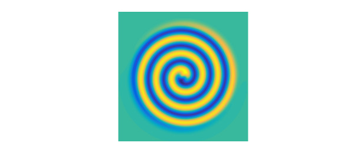
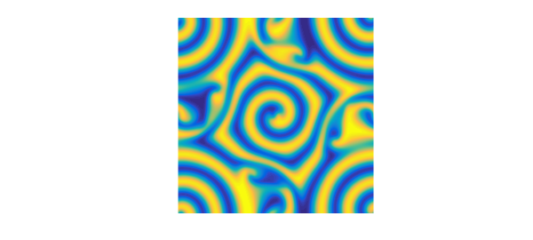
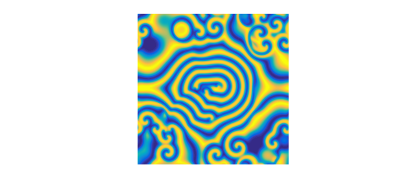

1. Preloaded examples in spin2
Chebfun's spin2 and spinop2 codes, like spin and spinop in 1D, include a number of preloaded examples, which you can find out about by typing help spin2 or help spinop2. One of the options is spin2('gl') for the 2D Complex Ginzburg-Landau equation. What is this equation?
To find out, you can type
S = spinop2('gl')
S =
spinop2 with properties:
domain: [0 100 0 100]
init: [InfxInf chebfun2]
lin: @(u)lap(u)
nonlin: @(u)u-(1+1.5i)*u.*(abs(u).^2)
tspan: [0 100]
numVars: 1
From here we see that the version of the equation in Chebfun is $$ u_t = \Delta u + u - (1+1.5i)u |u|^2 . $$ Thus we have a scalar PDE involving a complex variable. This equation has been used by a number of authors in the study of chaotic processes arising in fluid mechanics and other areas [1,2].
Using the above as a model, let us set up our own complex Ginzburg-Landau calculation as follows.
dom = 50*[-1 1 -1 1]; tspan = [0 16]; S = spinop2(dom,tspan); S.lin = @(u) lap(u); S.nonlin = @(u) u - (1+1.5i)*u.*(abs(u).^2);
2. Non-chaotic solutions
For our first initial condition, suppose we take the complex function $$ u_0(x,y) = (ix+y) \exp(-0.03(x^2+y^2)). $$ We let 16 time units time elapse and find a pretty spiral:
x = chebfun2(@(x,y) x,dom); y = chebfun2(@(x,y) y,dom); u1 = (1i*x+y).*exp(-.03*(x.^2+y.^2)); S.init = u1; npts = 80; dt = 4/npts; tic u = spin2(S,npts,dt,'plot','off'); plot(real(u)), view(0,90), axis equal, axis off

Here is the analogous experiment with the real initial condition $$ u_0(x,y) = (x+y) \exp(-0.03(x^2+y^2)). $$
u2 = (x+y).*exp(-.03*(x.^2+y.^2)); S.init = u2; u = spin2(S,npts,dt,'plot','off'); plot(real(u)), view(0,90), axis equal, axis off
Time for the first pair of computations:
time_in_seconds = toc
time_in_seconds = 3.101127954000000
3. Beginnings of chaos
Spin computations always live on periodic domains. We now extend these two computations to $t=48$, time enough for the function values to pass across the boundary and come in the other side. Here is the first computation.
tspan = [0 48]; S = spinop2(dom,tspan); S.lin = @(u) lap(u); S.nonlin = @(u) u - (1+1.5i)*u.*(abs(u).^2); S.init = u1; tic u = spin2(S,npts,dt,'plot','off'); plot(real(u)), view(0,90), axis equal, axis off

The picture reveals the remnants of the spiral in the middle but some more complicated behavior in the corners. Experiments on a finer mesh show that this picture is correct. The structures have somewhat of a random appearance, but they are not random.
Now we run the second function to $t=48$. This image is also correct. Note the preservation of the diagonal line of symmetry.
S.init = u2; u = spin2(S,npts,dt,'plot','off'); plot(real(u)), view(0,90), axis equal, axis off
Time for this second round of computations:
time_in_seconds = toc
time_in_seconds = 6.744747920000000
4. Chaos
Let's go now to $t=96$. Experiments with different grids confirm that this first image is correct.
tic, tspan = [0 96]; S = spinop2(dom,tspan); S.lin = @(u) lap(u); S.nonlin = @(u) u - (1+1.5i)*u.*(abs(u).^2); S.init = u1; tic, u = spin2(S,npts,dt,'plot','off'); plot(real(u)), view(0,90), axis equal, axis off
With the second function, we refine the grid enough to get a plausible picture, but it is not in fact converged. So this image is perhaps physically correct, but not mathematically correct. Note that the symmetry line has been lost.
npts = 128; dt = 4/npts; tic S.init = u2; u = spin2(S,npts,dt,'plot','off'); plot(real(u)), view(0,90), axis equal, axis off
Time for the third round of computations:
time_in_seconds = toc
time_in_seconds = 47.730490695999997
5. A bigger canvas
Let's double the size of the domain and the number of grid points in each direction. Here's the solution at $t=30$.
dom = 100*[-1 1 -1 1];
tspan = [0 30 60];
S = spinop2(dom,tspan);
S.lin = @(u) lap(u);
S.nonlin = @(u) u - (1+1.5i)*u.*(abs(u).^2);
x = chebfun2(@(x,y) x,dom); y = chebfun2(@(x,y) y,dom);
u1 = (1i*(x-8)+(y-2)).*exp(-.03*((x-8).^2+(y-2).^2)) + ...
((x+8)-(y+2)).*exp(-.03*((x+8).^2+(y+2).^2));
S.init = u1;
npts = 128; dt = 8/npts; tic
u = spin2(S,npts,dt,'plot','off');
plot(real(u{2})), view(0,90), axis equal, axis off
And at $t=60$, of questionable accuracy:
plot(real(u{3})), view(0,90), axis equal, axis off

To close a psychedelic note here is a phase portrait, obtained by plotting $u$ rather than its real part.
plot(u{3})
Time for the big canvas computation:
time_in_seconds = toc
time_in_seconds = 19.036402233000000
6. References
[1] H. Montanelli and N. Bootland, Solving periodic semilinear stiff PDEs in 1D, 2D and 3D with exponential integrators, submitted, 2016.
[2] L. N. Trefethen and K. Embree, editors, The (Unfinished) PDE Coffee Table Book, https://people.maths.ox.ac.uk/trefethen/pdectb.html.